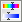

| 5.3. ഹ്യൂയേ-സാച്ചുറേഷൻ | ||
|---|---|---|

|
5. വർണ്ണ ഉപകരണങ്ങൾ |  |
| 5.3. ഹ്യൂയേ-സാച്ചുറേഷൻ | ||
|---|---|---|
|
|
5. വർണ്ണ ഉപകരണങ്ങൾ | |
ഹ്യൂയേ-സാച്ചുറേഷൻ ഉപകരണം തിരഞ്ഞെടുത്തു പ്രദേശത്ത് അല്ലെങ്കിൽ സജീവ പാളി നിറം തൂക്കം ഒരു കൂട്ടം ചെഞ്ചായം, കളർ, ചാപല്യം അളവ് ക്രമീകരിക്കാൻ ഉപയോഗിക്കുന്നു.
You can get to the Hue-Saturation tool in two ways :
→ → , അല്ലെങ്കിൽ → : വഴി ഇമേജ്-മെനുവിൽ
By clicking the tool icon:  in Toolbox, provided that you have installed color tools in Toolbox. For this, please refer to വിഭാഗം 1.7, “പണിസഞ്ചി”.
നിങ്ങൾ ബട്ടൺ  ക്ലിക്കുചെയ്ത് നിങ്ങളുടെ ചിത്രം നിറം ക്രമീകരണങ്ങൾ സംരക്ഷിക്കാൻ കഴിയും
ക്ലിക്കുചെയ്ത് നിങ്ങളുടെ ചിത്രം നിറം ക്രമീകരണങ്ങൾ സംരക്ഷിക്കാൻ കഴിയും
The
 button opens a menu:
button opens a menu:
ഏത് നിങ്ങൾ Import Settings from File അല്ലെങ്കിൽ Export Settings to File അനുവദിക്കുന്നു, നിങ്ങൾ നിയന്ത്രിക്കുന്ന ക്രമീകരണങ്ങൾ സംരക്ഷിക്കുക ഡയലോഗ് ആക്സസ് നൽകുന്നു:
നിങ്ങൾ മൂന്ന് പ്രാഥമിക നിറങ്ങൾ (റെഡ്, പച്ച, നീല) മൂന്നു തീർക്കുന്ന പരിഷ്കരിക്കാൻ നിറം നിറങ്ങൾ (സിയാൻ, മജന്ത, മഞ്ഞ), ആറ് തമ്മിലുള്ള, തിരഞ്ഞെടുക്കാൻ കഴിയും. അവർ നിറം സർക്കിൾ പ്രകാരം ക്രമീകരിച്ചിരിക്കുന്നത്. എപ്പോഴാണ് ചെഞ്ചായം കൂടുകയും, ചെഞ്ചായം എതിർഘടികാരദിശയിൽ പോകുന്നു. അതു കുറയുന്നു, അത് ഘടികാരദിശയിൽ പോകുന്നു. നിങ്ങൾ Master ബട്ടണില് ക്ലിക്ക് ചെയ്താൽ, എല്ലാ വർണ്ണങ്ങളും മാറ്റങ്ങളുമായി ബന്ധപ്പെട്ട ചെയ്യും. ജിമ്പ് സ്റ്റാൻഡേർഡ് ആയി 0. നോട്ട് റെഡ് സജ്ജമാക്കാൻ ഈ നിറങ്ങൾ നിറം ശ്രേണികൾ റഫർ ചെയ്ത് ചാനലുകൾ നിറത്തിൽ ചെയ്യരുത്.
ഹ്യൂയേ മാറ്റങ്ങൾ വർണ്ണ കാണിച്ചിരിക്കുന്നു ഒപ്പം “Preview” ഓപ്ഷൻ പ്രാപ്തമാക്കിയിട്ടുണ്ടെങ്കിൽ ഫലം ചിത്രം ദൃശ്യമാണ്.
ഈ സ്ലൈഡർ നിങ്ങളെ ശ്രേണികൾ വളരെ നിറം എങ്ങനെ ഓവർലാപ് നൽകുകയുള്ളൂ അനുവദിക്കുന്നു. ഈ പ്രഭാവം വളരെ തന്ത്രപൂർവം മാത്രമേ വളരെ അടുത്ത നിറങ്ങൾ പ്രവർത്തിക്കുന്നു:
ചിത്രം 14.146. Example for the “Overlap” option
Original image. ഇടത്ത് നിന്നും വലത്തോട്ട്: മഞ്ഞ നിറത്തിൽ (; 240; 0 255); നിഷ്കളങ്കമായ ഒരു മഞ്ഞ (255; 255; 0); ഒരു കലർന്ന മഞ്ഞ (240; 255; 0).
Overlap = 0. ഹ്യൂയേ = 15. നിറങ്ങൾ തീർന്നിരിക്കുന്നു (186; 255; 1), (168; 255; 1), (156; 255; 1).
Overlap = 100. ഹ്യൂയേ = 15. നിറങ്ങൾ തീർന്നിരിക്കുന്നു (192; 255; 1), (168; 255; 1), (162; 255; 1). കാരണം ഓവർലാപ്പ് എന്ന കലര്ന്ന കുറവ് പച്ച ആണ് ചുവന്ന കുറവ് ഉപഭോഗം.
Hue: സ്ലൈഡർ ഇൻപുട്ട് ബോക്സ് നിങ്ങൾക്ക് കളർ സർക്കിൾ (-180, 180) ഒരു ചെഞ്ചായം തിരഞ്ഞെടുക്കാൻ അനുവാദം.
Lightness: സ്ലൈഡർ ഇൻപുട്ട് ബോക്സ് നിങ്ങൾക്ക് ഒരു മൂല്യം (തേജസ്സ്) തിരഞ്ഞെടുക്കാം: -100, 100.
![[കുറിപ്പു്]](images/note.png)
|
കുറിപ്പു് |
|---|---|
|
ചാപല്യം ഇവിടെ ആശങ്ക അവർ നിറം ചാനലുകളിൽ പ്രവർത്തിക്കുന്നതു കർവ്സ് ആൻഡ് തോത് ഉപകരണങ്ങൾ, ഒരു കളർ ടോൺ കാര്യത്തിൽ, ഒരു നിറം പരിധി മാറ്റുന്നു. നിങ്ങൾ ഹ്യൂയേ-സാന്ദ്രീകരണം മഞ്ഞ ചാപല്യം മാറ്റുകയാണെങ്കിൽ, എല്ലാ മഞ്ഞ പിക്സലുകൾ മാത്രം ഇരുണ്ട അതേസമയം, മാറിപ്പോകും, ശോഭയുള്ള അല്ലെങ്കിൽ ഇടത്തരം പിക്സൽ പ്രതല കർവ്സ് അല്ലെങ്കിൽ തോത് ഉപകരണങ്ങൾ ഉപയോഗിച്ച് മാറ്റും. |
Saturation: സ്ലൈഡർ ഇൻപുട്ട് ബോക്സ് നിങ്ങൾ ഒരു സാച്ചുറേഷൻ തിരഞ്ഞെടുക്കാൻ അനുവാദം: -100, 100.
Initialize Color ബട്ടൺ തിരഞ്ഞെടുത്തു നിറം ചെഞ്ചായം, ചാപല്യം കൂടാതെ സാച്ചുറേഷൻ മാറ്റങ്ങൾ ഇല്ലാതാക്കുന്നു.
അവർ ഉടനെ കാണാൻ കഴിയുന്ന അങ്ങനെ പ്രിവ്യൂ ബട്ടൺ ചലനാത്മകമായി എല്ലാ മാറ്റങ്ങളും ചെയ്യുന്നു.